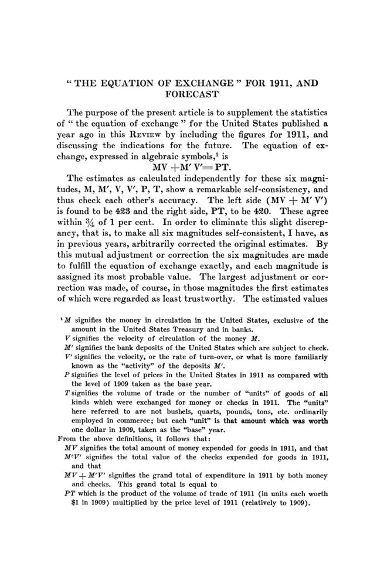

Junho de 1912: a tarifa da lã, a arte de gastar e a equação de trocas
Leitura: 11 min
Taussig lê o relatório da Tariff Board sobre a lã, Mitchell explica o atraso da arte de gastar, Coulter descreve o mercado de terras do Red River e Fisher atualiza a equação de trocas.


O relatório da Tariff Board sobre a lã e os tecidos de lã ocupa quatro volumes, 1.200 páginas. F. W. Taussig, de Harvard, abre o número de junho de 1912 da American Economic Review perguntando o que esse volume de dados ensina ao legislador que precisa fixar a tarifa. A resposta dele é que ensina muito ao economista e pouco ao legislador.
A edição traz quatro artigos nas primeiras 63 páginas. Depois de Taussig, Wesley C. Mitchell, da University of California, pergunta por que a arte de gastar dinheiro ficou tão atrás da arte de ganhá-lo. John Lee Coulter, do Bureau of the Census, descreve como se comprava e vendia terra agrícola no vale do Red River, em Minnesota e Dakota do Norte. Irving Fisher, de Yale, atualiza para 1911 sua equação de trocas e arrisca uma previsão. Seguem resenhas, listas de livros novos, documentos oficiais, resumos de periódicos, notas e a nona lista de teses de doutorado em andamento.
O que o relatório da Tariff Board ensina sobre a tarifa da lã?
F. W. Taussig (Harvard University) · “The Report of the Tariff Board on Wool and Woolens” · pp. 257–268
Taussig examina o relatório da Tariff Board, criada para basear a revisão tarifária nas diferenças de custo de produção entre os Estados Unidos e o exterior. A parte sobre a lã, diz, é bem organizada e resumida; a dos tecidos parece feita às pressas, porque o governo queria apresentar ao Congresso uma amostra do trabalho da junta logo no início da sessão.
Para medir o custo da lã, a junta somou as despesas diretas do criador com o rebanho, desconsiderou a terra e descontou as receitas da carne de carneiro. O resultado mostra regiões muito diferentes. Na região de agricultura geral, a leste do rio Missouri, o custo da lã é nulo: a carne paga as despesas. Na região de pastagens do Oeste, é de 11 centavos por libra; no enclave de Ohio e arredores, de 19 centavos.
Para Taussig, esses números não resolvem o problema do legislador. Se a tarifa iguala o custo do produtor mais caro, dá proteção demais aos outros; se cobre só o mais barato, chega quase à lã livre. A conclusão sobre a conveniência do imposto continua a depender de princípios gerais, e o autor declara a sua: não vê bom fundamento para o imposto sobre a lã.
Há pontos em que o relatório é claro. A junta recomenda cobrar o imposto pelo conteúdo de lã lavada, porque o imposto específico de 11 centavos por libra de lã bruta pesa mais sobre a lã que perde mais peso na lavagem. E demonstra que o sistema de impostos compensatórios sobre os tecidos, criado para compensar o imposto da lã, compensa mais que o necessário.
Nos tecidos, Taussig lamenta que a junta não tenha usado algo como a firma representativa de Marshall para comparar custos. Registra que 80% das máquinas das fiações de lã penteada, da lavagem ao fio, eram importadas, enquanto mais de três quartos dos teares eram nacionais. Para os economistas, conclui, o relatório é uma mina de informação.
Por que gastamos pior do que ganhamos?
Wesley C. Mitchell (University of California) · “The Backward Art of Spending Money” · pp. 269–281
Wesley C. Mitchell parte de uma assimetria. Ganhar e gastar dinheiro são artes correlatas, mas a sociedade desenvolveu muito mais habilidade na primeira. Ignorância de qualidades, falta de contabilidade e descuido com preços, falhas que arruinariam um comerciante, prevalecem na administração doméstica.
“Gastar dinheiro é fácil; gastá-lo bem é difícil.” (“To spend money is easy, to spend it well is hard.”)
A primeira explicação é de organização. Nos tempos coloniais, a família era unidade de produção e de consumo. A revolução industrial e a ferrovia transferiram a produção para a empresa, unidade maior e muito mais eficiente, com divisão do trabalho e máquinas. Como unidade de gasto, porém, a família ficou onde estava, e com ela a tarefa de comprar de tudo, do leite ao combustível, sem conhecimento especializado, sem escala para usar máquinas e sem tempo livre para administrar.
A segunda é técnica. A produção avançou apoiada na física e na química, as ciências mais exatas. O consumo depende da fisiologia e da psicologia, muito menos desenvolvidas. A terceira é contábil: a empresa mede custos e ganhos na mesma unidade, o dólar; a família mede custos em dólares, mas seus ganhos são o bem-estar físico e mental de seus membros, que não têm denominador comum.
Há ainda a dificuldade de definir os fins do gasto e o peso da busca de distinção social, tema que Mitchell atribui a Nassau Senior e a Thorstein Veblen. Numa economia monetária, a renda vira critério de valor, e gastar de modo visível passa a ser um modo de afirmar posição.
Por isso, conclui o autor, sermões contra a extravagância doméstica têm pouco efeito. As perspectivas de melhora estão em mudanças lentas: edifícios de apartamentos, cozinhas cooperativas, leis de alimentos puros, parques e creches públicos, que fazem do bairro, e não da família, a unidade de gasto; e na difusão de conhecimento científico sobre a casa. Mas a escolha do que vale a pena buscar, diz Mitchell, pertence à filosofia e à ética, não à técnica.
Como se comprava terra no vale do Red River?
John Lee Coulter (Bureau of the Census, Washington) · “Marketing of Agricultural Lands in Minnesota and North Dakota” · pp. 282–301
John Lee Coulter observa que a compra e venda de terra agrícola é pouco estudada, embora nos Estados Unidos quase não haja obstáculos legais ao comércio de terras. Onde a lei não atrapalha, argumenta, surgem as formas que melhor servem às necessidades das pessoas. Para mostrar isso, descreve os métodos usados no vale do Red River do Norte, região plana de cereais, conhecida como grande produtora de trigo, dividida entre Minnesota e Dakota do Norte.
O primeiro vendedor é o próprio Estado. A Dakota do Norte recebeu mais de 3 milhões de acres para sustentar suas instituições. A constituição estadual limitou o ritmo de venda das terras escolares; a terra era avaliada em ao menos US$ 10 por acre, anunciada por sessenta dias e vendida só em leilão público, nunca abaixo da avaliação e em lotes de até 160 acres, com um quinto à vista e o restante em parcelas de 5 a 20 anos, a juros de 6%. Minnesota usava sistema parecido, mas a lei de 1905 exigia do comprador, em cinco anos, cercar 25% do lote para pasto, cultivar 5% ou nele morar por doze meses, para desestimular a especulação.
O núcleo do artigo é o sistema de pagamento com a colheita, que Coulter atribui ao coronel Morton, a partir de cerca de 1883. O comprador, em geral com pouco capital, dava uma entrada e entregava metade da safra a cada ano até quitar a terra. Numa variante, o preço era fixado em trigo: um quarto de seção de 160 acres por 8.000 bushels, pagos com metade da colheita. A variante perdeu força porque a oscilação do preço do trigo criava disputas entre as partes.
Para Coulter, todas as formas obedecem à mesma ideia, fazer a terra pagar a si mesma. O pagamento com a colheita funciona como substituto do arrendamento: a parte da safra entregue não é renda, mas amortização do preço. O sistema, observa, foi levado ao noroeste do Canadá.
O que a equação de trocas mostrou em 1911?
Irving Fisher (Yale University) · “"The Equation of Exchange" for 1911, and Forecast” · pp. 302–319
Irving Fisher atualiza para 1911 as estimativas da equação de trocas, MV + M'V' = PT, que publicara na revista no ano anterior. M é a moeda em circulação fora dos bancos e do Tesouro; V, sua velocidade; M', os depósitos sujeitos a cheque; V', a rotação desses depósitos; P, o nível de preços com base em 1909; e T, o volume de comércio, medido em unidades que valiam um dólar em 1909.
As seis grandezas são estimadas de forma independente. Antes do ajuste, o lado esquerdo da equação somava 423 e o direito, 420, diferença inferior a três quartos de 1%. Fisher corrige as estimativas para que a igualdade feche e argumenta que essa concordância é, em si, sinal de precisão. Compara também três cálculos sucessivos para 1911, cada um mais próximo da igualdade que o anterior.
Na comparação com 1910, quase nada mudou. Os depósitos cresceram, mas sua rotação caiu; o comércio aumentou quase 4%; a moeda em circulação ficou estável; e os preços caíram cerca de 2%. Os depósitos já equivaliam a quase cinco vezes a moeda em circulação, a maior relação da série e, para Fisher, o único sinal de excesso em 1911. Fisher associa o aumento dos depósitos à grande importação de ouro de 1911 e calcula que, sem o aumento do uso de cheques em relação à moeda, o nível de preços de 1911 teria sido 48% menor.
Observa ainda que, enquanto os preços americanos caíram, os do mundo subiram, a julgar por Canadá, Inglaterra, França e Alemanha, o que tenderia a restabelecer os níveis relativos. A previsão é de continuidade da alta de preços por muitos anos, ainda que a pausa possa durar até 1912; para o ano seguinte, espera menos importação de ouro, mais moeda em circulação e ligeira alta de preços.
O que mais há na edição?
As resenhas, organizadas por área, vão da teoria do valor de B. M. Anderson, resenhada por Alvin S. Johnson, ao Shop Management de Frederick W. Taylor; Mitchell resenha um livro de George H. Hull sobre depressões industriais, e A. N. Holcombe, um estudo sobre o governo de Denver. Entre os documentos, Holcombe escreve também sobre a comissão de salário mínimo de Massachusetts. As notas registram 2.544 sócios em 1º de maio de 1912, com 251 entradas e 111 desligamentos desde a reunião anual. Fecha o número a nona lista de teses de doutorado em economia em andamento nas universidades americanas.
Na minha leitura
Na minha leitura, o fio comum da edição é a medição. Taussig mostra que um levantamento de custos minucioso não decide uma questão de política, que continua a depender de princípios; Fisher defende o contrário para a teoria monetária, usando a coerência entre estimativas independentes como teste de precisão. As duas posições não se contradizem: uma trata do que os números podem decidir, a outra do quanto se pode confiar neles.
Mitchell leva a pergunta para onde a medição falha. Sem denominador comum para os ganhos do consumo, a família não pode calcular como a empresa calcula, e a teoria econômica do consumidor fica sem a contabilidade que dá disciplina à teoria da firma.
Glossário
- Tariff Board
- junta federal criada para estudar custos de produção como base para a revisão das tarifas.
- Schedule K
- parte da tarifa americana que fixava os impostos sobre a lã e os tecidos de lã.
- Imposto compensatório
- imposto sobre o tecido destinado a compensar o fabricante pelo imposto pago sobre a lã.
- Firma representativa
- noção de Marshall: empresa típica, nem a mais nem a menos eficiente, usada para pensar o custo normal.
- Pagamento com a colheita
- venda de terra em que o comprador quita o preço entregando parte da safra a cada ano.
- Equação de trocas
- identidade de Fisher, MV + M'V' = PT, entre gastos em moeda e cheques e o valor das transações.
- Velocidade de circulação
- número de vezes por ano que a moeda, ou o depósito, é usada em pagamentos.
Artigos (4)
- The Report of the Tariff Board on Wool and Woolens — F. W. Taussig (Harvard University) (pp. 257–268) · resenha acima · comentário completo · JSTOR
- The Backward Art of Spending Money — Wesley C. Mitchell (University of California) (pp. 269–281) · resenha acima · comentário completo · JSTOR
- Marketing of Agricultural Lands in Minnesota and North Dakota — John Lee Coulter (Bureau of the Census, Washington) (pp. 282–301) · resenha acima · JSTOR
- "The Equation of Exchange" for 1911, and Forecast — Irving Fisher (Yale University) (pp. 302–319) · resenha acima · JSTOR
Resenhas (42)
- B. M. Anderson, Social Value. A Study in Economic Theory, Critical and Constructive — Alvin S. Johnson (pp. 320–323). Ensaio premiado na série Hart Schaffner and Marx; o resenhista o vê como contribuição a considerar na teoria do valor. JSTOR
- S. J. Chapman, Outlines of Political Economy — Herbert E. Mills (pp. 323–325). Manual para iniciantes, que reconhece a dívida com o ensino de Marshall. JSTOR
- James Bonar, Disturbing Elements in the Study and Teaching of Political Economy — George Ray Wicker (pp. 325–326). Cinco conferências do diretor da Casa da Moeda do Canadá. JSTOR
- John Beattie Crozier, Sociology Applied to Practical Politics — Herbert Croly (pp. 326–327). Artigos publicados em revistas inglesas ao longo de dez anos. JSTOR
- Johannes Müller, Abriss einer Geschichte der Theorie von den Produktionsfaktoren — Lewis H. Haney (pp. 327–328). Esboço das teorias dos fatores de produção, de Turgot a Brentano. JSTOR
- A. Maurice Low, The American People. A Study in National Psychology, vol. II — Guy S. Callender (pp. 331–334). Segundo volume de um estudo sobre a psicologia do povo americano. JSTOR
- Franz Erich Junge, Amerikanische Wirtschaftspolitik — E. L. Bogart (pp. 334–335). Estudo alemão da política econômica americana e de suas lições para a Alemanha. JSTOR
- A. M. Simons, Social Forces in American History — E. T. Miller (pp. 335–337). Interpretação econômica da história americana. JSTOR
- Giles B. Jackson e D. Webster Davis, The Industrial History of the Negro Race of the United States — Alfred H. Stone (pp. 337–338). Edição escolar de uma história industrial. JSTOR
- Ellen Churchill Semple, Influences of Geographic Environment — Edward van Dyke Robinson (pp. 338–340). Obra baseada no sistema de antropogeografia de Ratzel. JSTOR
- Émile Levasseur, Histoire du Commerce de la France, primeira parte: avant 1789 — Clive Day (pp. 340–341). História do comércio francês até 1789. JSTOR
- Otto Hue, Die Bergarbeiter, vol. I — Isaac A. Hourwich (pp. 341–343). História das condições de trabalho dos mineiros, das mais antigas às recentes. JSTOR
- Henry Greenleaf Pearson, An American Railroad Builder: John Murray Forbes — Ernest L. Bogart (pp. 350–352). Biografia de um construtor de ferrovias americano. JSTOR
- C. Colson, Cours d'Économie Politique, vol. VI: Les Travaux Publics et les Transports — Charles Lee Raper (pp. 352–353). Volume sobre obras públicas e transportes, em segunda edição revista. JSTOR
- Edwin Kech, Geschichte der deutschen Eisenbahnpolitik — Lewis H. Haney (pp. 353–354). História breve da política ferroviária alemã, da coleção Sammlung Göschen. JSTOR
- Edwin J. Clapp, The Navigable Rhine e The Port of Hamburg — H. G. Moulton (pp. 355–357). Dois estudos sobre o Reno navegável e o porto de Hamburgo. JSTOR
- George H. Hull, Industrial Depressions — Wesley C. Mitchell (pp. 359–361). Livro que trata o ferro como barômetro do comércio e propõe um remédio para as depressões. JSTOR
- Frank E. Webner, Factory Costs — John C. Duncan (pp. 362–364). Tratado de custos industriais em sete partes. JSTOR
- Sterling H. Bunnell, Cost-Keeping for Manufacturing Plants — W. T. Jackman (pp. 364–366). Manual de apuração de custos para fábricas. JSTOR
- Edward P. Moxey Jr., Accounting Systems — W. T. Jackman (pp. 366–367). Décimo volume da série Modern Business. JSTOR
- Walter Dill Scott, Increasing Human Efficiency in Business — Edward L. Thorndike (pp. 367–369). Contribuição à psicologia dos negócios. JSTOR
- Frederick W. Taylor, Shop Management — Edward D. Jones (pp. 369–371). Reedição, com acréscimos, de trabalho apresentado em 1903 à American Society of Mechanical Engineers. JSTOR
- Clyde Lyndon King, The History of the Government of Denver — A. N. Holcombe (pp. 373–374). Estudo do governo de Denver e de suas relações com as empresas de serviços públicos. JSTOR
- Frank Tracy Carlton, The History and Problems of Organized Labor — J. K. Towles (pp. 376–378). Manual sobre a história e os problemas do sindicalismo. JSTOR
- Lindley D. Clark, The Law of the Employment of Labor — R. F. Hoxie (pp. 379–380). Manual jurídico sobre o direito do trabalho. JSTOR
- Louise Marion Bosworth, The Living Wage of Women Workers — Edith Abbott (pp. 380–382). Estudo das rendas e dos gastos de 450 trabalhadoras de Boston. JSTOR
- Board of Trade, Tables Showing the Rules and Expenditure of Trade Unions in Respect of Unemployed Benefits — George E. Barnett (pp. 383). Tabelas oficiais britânicas sobre benefícios sindicais de desemprego. JSTOR
- M. de P. Webb, Gold for India — E. W. K. (pp. 387–388). Defesa da adoção do relatório de 1899 do comitê sobre a moeda indiana. JSTOR
- J. Theodore Harris, An Example of Communal Currency — Murray S. Wildman (pp. 388–389). História de notas circulantes sem juros emitidas por um estado insular entre 1816 e 1837. JSTOR
- Gabriel Faure, Simples Notions sur les Changes Étrangers — E. W. Kemmerer (pp. 389–390). Cartilha de câmbio estrangeiro. JSTOR
- Maurice Ansiaux, Principes de la Politique Régulatrice des Changes — Wm. A. Scott (pp. 390–392). Livro que defende a regulação do câmbio. JSTOR
- Edwin M. Bacon, Manual of Ship Subsidies — E. J. Clapp (pp. 395). Histórico da legislação de subsídios à navegação em vários países. JSTOR
- Bertrand Nogaro e Marcel Moye, Les Régimes Douaniers — O. D. Skelton (pp. 395–396). Manual de regimes aduaneiros. JSTOR
- Grundfragen unserer Handelspolitik — Edward van Dyke Robinson (pp. 396–397). Opúsculo anônimo sobre a política comercial alemã. JSTOR
- H. Weissenborn, Die Besteuerung nach dem Ueberfluss — Carl C. Plehn (pp. 397–399). Proposta de reforma dos impostos diretos na Prússia. JSTOR
- Hannes Pyszka, Bergarbeiterbevölkerung und Fruchtbarkeit — W. B. Bailey (pp. 403–404). Estudo do movimento populacional dos mineiros alemães. JSTOR
- Vocation Bureau of Boston, The Department Store — C. W. D. (pp. 405–406). Oitavo volume de uma série sobre ocupações. JSTOR
- F. C. Schwedtmann e J. A. Emery, Accident Prevention and Relief — Robert F. Foerster (pp. 408–409). Investigação sobre prevenção e indenização de acidentes na Europa, publicada pela National Association of Manufacturers. JSTOR
- Étienne Buisson, La Nationalisation des Assurances — W. F. Gephart (pp. 409–410). Monografia sobre o monopólio estatal de seguros. JSTOR
- Jessie Wallace Hughan, American Socialism of the Present Day — A. B. Wolfe (pp. 413–414). Estudo do socialismo americano, com introdução de John Spargo. JSTOR
- Jean Granier, Les Actions de Travail — Arthur Sargent Field (pp. 414–416). Estudo das ações de trabalho, com prefácio de Charles Gide. JSTOR
- Eduard Rosenbaum, Ferdinand Lassalle, e Johannes Mundwiler, Bischof von Ketteler als Vorkämpfer der christlichen Sozialreform — J. E. Le Rossignol (pp. 416–418). Estudos sobre Lassalle e sobre o bispo Ketteler. JSTOR
Novos livros (15)
- New Books (teoria e sua história) — redação (pp. 328–331). Lista de lançamentos sobre teoria e sua história, alguns com nota curta. JSTOR
- New Books (história econômica e geografia) — redação (pp. 343–347). Lista de lançamentos sobre história econômica e geografia, alguns com nota curta. JSTOR
- New Books (agricultura, mineração, florestas e pesca) — redação (pp. 347–349). Lista de lançamentos sobre agricultura, mineração, florestas e pesca, alguns com nota curta. JSTOR
- New Books (transportes e comunicações) — redação (pp. 357–359). Lista de lançamentos sobre transportes e comunicações, alguns com nota curta. JSTOR
- New Books (comércio e crises comerciais) — redação (pp. 361–362). Lista de lançamentos sobre comércio e crises comerciais, alguns com nota curta. JSTOR
- New Books (contabilidade, métodos de negócios, investimentos e câmbio) — redação (pp. 371–373). Lista de lançamentos sobre contabilidade, métodos de negócios, investimentos e câmbio, alguns com nota curta. JSTOR
- New Books (capital e organização capitalista) — redação (pp. 374–376). Lista de lançamentos sobre capital e organização capitalista, alguns com nota curta. JSTOR
- New Books (trabalho e organizações trabalhistas) — redação (pp. 383–387). Lista de lançamentos sobre trabalho e organizações trabalhistas, alguns com nota curta. JSTOR
- New Books (moeda, preços, crédito e bancos) — redação (pp. 392–394). Lista de lançamentos sobre moeda, preços, crédito e bancos, alguns com nota curta. JSTOR
- New Books (finanças públicas, tributação e tarifa) — redação (pp. 399–403). Lista de lançamentos sobre finanças públicas, tributação e tarifa, alguns com nota curta. JSTOR
- New Books (população e migração) — redação (pp. 404–405). Lista de lançamentos sobre população e migração, alguns com nota curta. JSTOR
- New Books (problemas sociais e reformas) — redação (pp. 406–408). Lista de lançamentos sobre problemas sociais e reformas, alguns com nota curta. JSTOR
- New Books (seguros e pensões) — redação (pp. 410–412). Lista de lançamentos sobre seguros e pensões, alguns com nota curta. JSTOR
- New Books (socialismo e cooperativas) — redação (pp. 418–420). Lista de lançamentos sobre socialismo e cooperativas, alguns com nota curta. JSTOR
- New Books — redação (pp. 420). Lista de lançamentos, alguns com nota curta. JSTOR
Documentos, periódicos e notas (4)
- Documents, Reports and Legislation — redação e colaboradores (pp. 421–456). Resumos de documentos oficiais, com textos sobre a proposta federal de indenização de acidentes (James A. Lowell), a comissão de salário mínimo de Massachusetts (A. N. Holcombe) e o trabalho de mulheres e crianças (Emilie Louise Wells). JSTOR
- Periodicals — redação e colaboradores (pp. 457–507). Resumos de artigos de periódicos americanos e estrangeiros, por área. JSTOR
- Notes — redação (pp. 508–518). Registra 2.544 sócios em 1º de maio de 1912, além de congressos, lançamentos e nomeações. JSTOR
- Ninth List of Doctoral Dissertations in Political Economy in Progress in American Universities and Colleges — redação (pp. 519–529). Nona lista de teses de doutorado em economia em andamento nas universidades americanas, organizada por área. JSTOR
Fontes
- The Report of the Tariff Board on Wool and Woolens (pp. 257–268). JSTOR · Internet Archive (PDF)
- The Backward Art of Spending Money (pp. 269–281). JSTOR · Internet Archive (PDF)
- Marketing of Agricultural Lands in Minnesota and North Dakota (pp. 282–301). JSTOR · Internet Archive (PDF)
- "The Equation of Exchange" for 1911, and Forecast (pp. 302–319). JSTOR · Internet Archive (PDF)
- [untitled] The American Economic Review, (1912-06-01), pages 320-323 (pp. 320–323). JSTOR · Internet Archive (PDF)
- [untitled] The American Economic Review, (1912-06-01), pages 323-325 (pp. 323–325). JSTOR · Internet Archive (PDF)
- [untitled] The American Economic Review, (1912-06-01), pages 325-326 (pp. 325–326). JSTOR · Internet Archive (PDF)
- [untitled] The American Economic Review, (1912-06-01), pages 326-327 (pp. 326–327). JSTOR · Internet Archive (PDF)
- [untitled] The American Economic Review, (1912-06-01), pages 327-328 (pp. 327–328). JSTOR · Internet Archive (PDF)
- New Books (pp. 328–331). JSTOR · Internet Archive (PDF)
- [untitled] The American Economic Review, (1912-06-01), pages 331-334 (pp. 331–334). JSTOR · Internet Archive (PDF)
- [untitled] The American Economic Review, (1912-06-01), pages 334-335 (pp. 334–335). JSTOR · Internet Archive (PDF)
- [untitled] The American Economic Review, (1912-06-01), pages 335-337 (pp. 335–337). JSTOR · Internet Archive (PDF)
- [untitled] The American Economic Review, (1912-06-01), pages 337-338 (pp. 337–338). JSTOR · Internet Archive (PDF)
- [untitled] The American Economic Review, (1912-06-01), pages 338-340 (pp. 338–340). JSTOR · Internet Archive (PDF)
- [untitled] The American Economic Review, (1912-06-01), pages 340-341 (pp. 340–341). JSTOR · Internet Archive (PDF)
- [untitled] The American Economic Review, (1912-06-01), pages 341-343 (pp. 341–343). JSTOR · Internet Archive (PDF)
- New Books (pp. 343–347). JSTOR · Internet Archive (PDF)
- New Books (pp. 347–349). JSTOR · Internet Archive (PDF)
- [untitled] The American Economic Review, (1912-06-01), pages 350-352 (pp. 350–352). JSTOR · Internet Archive (PDF)
- [untitled] The American Economic Review, (1912-06-01), pages 352-353 (pp. 352–353). JSTOR · Internet Archive (PDF)
- [untitled] The American Economic Review, (1912-06-01), pages 353-354 (pp. 353–354). JSTOR · Internet Archive (PDF)
- [untitled] The American Economic Review, (1912-06-01), pages 355-357 (pp. 355–357). JSTOR · Internet Archive (PDF)
- New Books (pp. 357–359). JSTOR · Internet Archive (PDF)
- [untitled] The American Economic Review, (1912-06-01), pages 359-361 (pp. 359–361). JSTOR · Internet Archive (PDF)
- New Books (pp. 361–362). JSTOR · Internet Archive (PDF)
- [untitled] The American Economic Review, (1912-06-01), pages 362-364 (pp. 362–364). JSTOR · Internet Archive (PDF)
- [untitled] The American Economic Review, (1912-06-01), pages 364-366 (pp. 364–366). JSTOR · Internet Archive (PDF)
- [untitled] The American Economic Review, (1912-06-01), pages 366-367 (pp. 366–367). JSTOR · Internet Archive (PDF)
- [untitled] The American Economic Review, (1912-06-01), pages 367-369 (pp. 367–369). JSTOR · Internet Archive (PDF)
- [untitled] The American Economic Review, (1912-06-01), pages 369-371 (pp. 369–371). JSTOR · Internet Archive (PDF)
- New Books (pp. 371–373). JSTOR · Internet Archive (PDF)
- [untitled] The American Economic Review, (1912-06-01), pages 373-374 (pp. 373–374). JSTOR · Internet Archive (PDF)
- New Books (pp. 374–376). JSTOR · Internet Archive (PDF)
- [untitled] The American Economic Review, (1912-06-01), pages 376-378 (pp. 376–378). JSTOR · Internet Archive (PDF)
- [untitled] The American Economic Review, (1912-06-01), pages 379-380 (pp. 379–380). JSTOR · Internet Archive (PDF)
- [untitled] The American Economic Review, (1912-06-01), pages 380-382 (pp. 380–382). JSTOR · Internet Archive (PDF)
- [untitled] The American Economic Review (1912-06-01), page 383 (pp. 383). JSTOR · Internet Archive (PDF)
- New Books (pp. 383–387). JSTOR · Internet Archive (PDF)
- [untitled] The American Economic Review, (1912-06-01), pages 387-388 (pp. 387–388). JSTOR · Internet Archive (PDF)
- [untitled] The American Economic Review, (1912-06-01), pages 388-389 (pp. 388–389). JSTOR · Internet Archive (PDF)
- [untitled] The American Economic Review, (1912-06-01), pages 389-390 (pp. 389–390). JSTOR · Internet Archive (PDF)
- [untitled] The American Economic Review, (1912-06-01), pages 390-392 (pp. 390–392). JSTOR · Internet Archive (PDF)
- New Books (pp. 392–394). JSTOR · Internet Archive (PDF)
- [untitled] The American Economic Review (1912-06-01), page 395 (pp. 395). JSTOR · Internet Archive (PDF)
- [untitled] The American Economic Review, (1912-06-01), pages 395-396 (pp. 395–396). JSTOR · Internet Archive (PDF)
- [untitled] The American Economic Review, (1912-06-01), pages 396-397 (pp. 396–397). JSTOR · Internet Archive (PDF)
- [untitled] The American Economic Review, (1912-06-01), pages 397-399 (pp. 397–399). JSTOR · Internet Archive (PDF)
- New Books (pp. 399–403). JSTOR · Internet Archive (PDF)
- [untitled] The American Economic Review, (1912-06-01), pages 403-404 (pp. 403–404). JSTOR · Internet Archive (PDF)
- New Books (pp. 404–405). JSTOR · Internet Archive (PDF)
- [untitled] The American Economic Review, (1912-06-01), pages 405-406 (pp. 405–406). JSTOR · Internet Archive (PDF)
- New Books (pp. 406–408). JSTOR · Internet Archive (PDF)
- [untitled] The American Economic Review, (1912-06-01), pages 408-409 (pp. 408–409). JSTOR · Internet Archive (PDF)
- [untitled] The American Economic Review, (1912-06-01), pages 409-410 (pp. 409–410). JSTOR · Internet Archive (PDF)
- New Books (pp. 410–412). JSTOR · Internet Archive (PDF)
- [untitled] The American Economic Review, (1912-06-01), pages 413-414 (pp. 413–414). JSTOR · Internet Archive (PDF)
- [untitled] The American Economic Review, (1912-06-01), pages 414-416 (pp. 414–416). JSTOR · Internet Archive (PDF)
- [untitled] The American Economic Review, (1912-06-01), pages 416-418 (pp. 416–418). JSTOR · Internet Archive (PDF)
- New Books (pp. 418–420). JSTOR · Internet Archive (PDF)
- New Books (pp. 420). JSTOR · Internet Archive (PDF)
- Documents, Reports and Legislation (pp. 421–456). JSTOR · Internet Archive (PDF)
- Periodicals (pp. 457–507). JSTOR · Internet Archive (PDF)
- Notes (pp. 508–518). JSTOR · Internet Archive (PDF)
- Ninth List of Doctoral Dissertations in Political Economy in Progress in American Universities and Colleges (pp. 519–529). JSTOR · Internet Archive (PDF)
- Sumário da edição no JSTOR: The American Economic Review, vol. 2, nº 2.
Documento em domínio público (EUA, publicado antes de 1931), via JSTOR Early Journal Content e Internet Archive. Resumo e comentário do autor deste site, sem afiliação com a American Economic Association. Encontrou um erro? Escreva: a correção é publicada no próprio texto, com data.
← Nº 118 · Washington, 1911: tarifa medida, orçamento federal e a história como teste Nº 120 · Setembro de 1912: a maré dos preços, o algodão e a tarifa →